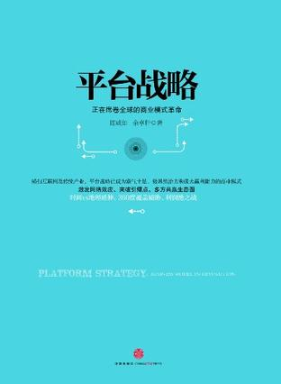
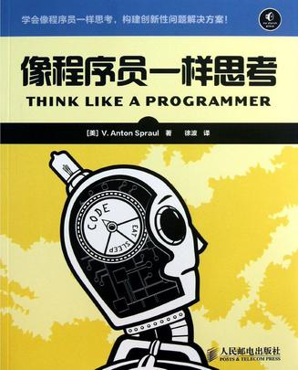

Como programador, si solo te dedicas a escribir código, no es suficiente. Debes sacar tiempo para enriquecer tus conocimientos y leer más libros.
Aquí recomendamos algunos buenos libros para programadores, con la esperanza de que puedan ser de ayuda para ellos.
El Zen de los patrones de diseño (2.ª edición)
Este libro es uno de los tres clásicos reconocidos en el campo de los patrones de diseño. "Extremadamente interesante, fácil de entender, pero con explicaciones sumamente rigurosas y profundas" es la característica más destacada del estilo de escritura y método de este libro. La primera edición se publicó en 2010, ha sido un éxito de ventas desde entonces y ha recibido numerosos elogios; es una obra emblemática en este campo. Interpreta en profundidad las definiciones precisas, los métodos de aplicación y las mejores prácticas de los 6 grandes principios de diseño y 28 patrones de diseño, compara exhaustivamente las similitudes y diferencias entre patrones similares, y explica detalladamente los métodos para combinar diferentes patrones. La segunda edición presenta dos mejoras con respecto a la primera: por un lado, corrige y perfecciona los defectos del contenido original teniendo en cuenta las opiniones y sugerencias de los lectores; por otro lado, añade 4 nuevos patrones de diseño. ¡Esperamos que esta edición ofrezca a los programadores un festín de patrones de diseño aún más perfecto!
El camino del programador
"El camino del programador" se compone de una serie de partes independientes, y los temas que abarca van desde la responsabilidad personal y el desarrollo profesional hasta las diversas técnicas arquitectónicas utilizadas para mantener el código flexible, fácil de adaptar y reutilizar. Mediante numerosas anécdotas entretenidas, ejemplos que invitan a la reflexión y analogías interesantes, explica de forma exhaustiva las mejores prácticas y los principales peligros en muchos aspectos diferentes del desarrollo de software. Ya seas un principiante, un programador con experiencia o un gerente de proyectos de software, este libro es adecuado para ti.
Estrategia de plataforma: la revolución del modelo de negocio que está arrasando el mundo

Resumen del contenido de "Estrategia de plataforma: la revolución del modelo de negocio que está arrasando el mundo": la esencia del modelo de negocio de plataforma reside en crear un "ecosistema" completo y con un fuerte potencial de crecimiento. Posee un sistema de normas y mecanismos precisos y singular, capaz de incentivar eficazmente la interacción entre múltiples grupos y alcanzar la visión de la empresa plataforma. Al observar muchas empresas en todo el mundo que han redefinido la arquitectura de su industria, a menudo descubrimos la clave de su éxito: establecer un buen "ecosistema de plataforma" que conecte a dos o más grupos, doblando y rompiendo la cadena industrial existente.
Cuando un grupo dentro del ecosistema de plataforma crece debido al aumento de la demanda, la demanda del otro grupo también aumentará en consecuencia. De este modo, se establece un mecanismo de círculo virtuoso, y las partes que se comunican a través de esta plataforma también promoverán el crecimiento ilimitado de las demás. Alcanzar objetivos estratégicos a través del modelo de plataforma incluye el crecimiento de la escala y la mejora del ecosistema, incluso enfrentarse a los competidores, e incluso desmantelar el estado actual de la industria y remodelar el panorama del mercado.
Revelaciones del emprendimiento en Internet
"Revelaciones del emprendimiento en Internet" es una guía para crear empresas de Internet. Su contenido abarca la situación actual y las oportunidades del emprendimiento web, el valor de las startups, la selección de plataformas, herramientas y grupos, la recaudación de fondos, la gestión y la rentabilidad, el entorno de los medios sociales, la gestión de la ejecución de acciones, la metodología y la eficiencia de los desarrolladores, el papel del fundador, etc. Incluye tanto teorías programáticas y orientativas como métodos operativos específicos. Las numerosas entrevistas e introducciones a personas exitosas del emprendimiento en Internet, así como los casos de éxito de startups, pueden servir como una buena referencia para quienes emprenden por primera vez.
"Revelaciones del emprendimiento en Internet" está dirigido principalmente a programadores que quieren emprender su propio negocio, pero también es adecuado para personal no técnico, para emprendedores de Internet, emprendedores universitarios, profesionales del marketing en línea y todos aquellos con aspiraciones de emprender. ¡No es necesario entender de tecnología para trabajar en Internet; el éxito en Internet se puede tomar como referencia y extenderse!
Guía de salud para programadores
Este libro es una guía de salud hecha a medida para programadores. Aborda problemas comunes como dolores de cabeza, fatiga visual, dolor de espalda y dolor de muñeca, presenta brevemente sus causas y métodos de evaluación, y enumera planes de acción diarios, con instrucciones detalladas en aspectos como el ejercicio y la dieta, para ayudar a los programadores a tener salud fácilmente sin cambiar su forma de trabajo.
Este libro es adecuado para programadores, para otras personas que trabajan largas horas sentadas ante el escritorio y para todas las personas preocupadas por su salud.
Tejiendo la red @ El gestor de productos de Internet que cambia el mundo
Este libro toma como hilo conductor cómo crear, publicar y promocionar productos de Internet, e introduce el contenido del trabajo del gestor de productos de Internet, así como los métodos y herramientas necesarios para cada parte del trabajo. Crear valor para los usuarios es la primera prioridad del gestor de productos; su trabajo se desarrolla en torno a los usuarios y a tareas específicas. Los abundantes casos y los análisis profundos de este libro revelan el secreto detrás del proceso que va desde descubrir a los usuarios hasta finalmente satisfacerlos.
Este libro está dirigido a emprendedores y gestores de productos que actualmente trabajan o trabajarán en el futuro en labores relacionadas con Internet, y también puede servir como libro de referencia para planificadores de productos de Internet o estudiantes de especialidades afines. La nueva edición perfecciona todos los capítulos y añade contenido como la degradación elegante; los lectores también pueden sentir más profundamente las reflexiones de un gestor de productos.
Análisis de problemas de lógica en entrevistas para programadores
"Análisis de problemas de lógica en entrevistas para programadores" se divide en tres partes. La primera parte comienza con acertijos interesantes que ejercitan la mente, y luego ofrece enfoques de resolución y respuestas detalladas, además de "problemas de calentamiento" que brindan amplio espacio para pensar. La segunda parte integra diferentes tipos de acertijos, como sudoku, problemas de planificación y problemas de probabilidad. La misteriosa tercera parte lleva a los lectores a vivir continuas aventuras, agudizando la mente para resolver una gran cantidad de problemas relacionados con contraseñas y cuentas bancarias. Docenas de pequeños acertijos concisos no solo ejercitan plenamente nuestra forma de pensar, sino que también sientan las bases para aumentar la tasa de éxito en las entrevistas.
"Análisis de problemas de lógica en entrevistas para programadores" no solo es adecuado para que lo lean los programadores, sino que también es un banquete para los amantes de los acertijos.
Programador, no puedes permitirte salir herido
Este libro es una colección seleccionada de las publicaciones del blog del autor. Es el recorrido mental y el resumen de experiencias del autor a lo largo de sus 15 años de carrera en desarrollo de software como programador veterano y actual emprendedor de TI. Abarca la vida del programador, la experiencia en desarrollo, la planificación profesional y las reflexiones sobre el emprendimiento. Tiene valor de referencia para cualquier desarrollador de software y profesional de TI. El lenguaje del autor es ingenioso y humorístico, y su lectura resulta muy amena. Entre líneas está llena de la energía positiva e inquebrantable del programador.
Piensa como un programador

El verdadero desafío de la programación no es aprender la sintaxis de un lenguaje, sino aprender a resolver problemas de manera creativa para construir aplicaciones maravillosas. "Piensa como un programador" analiza los métodos que utilizan los programadores para resolver problemas y te enseña una habilidad que otros libros pasan por alto: cómo pensar como un programador.
El libro se divide en 8 capítulos. El capítulo 1 comienza con varios problemas clásicos de algoritmos y resume las técnicas y pasos básicos para la resolución de problemas. El capítulo 2 resuelve varios problemas sencillos mediante la escritura real de código C++, permitiendo a los lectores comprender mejor el enfoque y la aplicación de la resolución de problemas. Los capítulos 3 a 7 son la parte principal del libro, y exploran respectivamente las vías y aplicaciones prácticas de resolución de problemas mediante arrays, punteros y memoria dinámica, clases, recursión y reutilización de código. Finalmente, el capítulo 8, desde la perspectiva de cultivar el pensamiento del programador, hace un resumen y una síntesis, explicando a los lectores cómo pueden pensar como un programador.
El arte de escribir código legible
Los detalles determinan el éxito o el fracaso: un código de ideas claras y conciso permite al programador entenderlo de un vistazo, mientras que un código desordenado y redundante deja al programador desconcertado. Además de poder ejecutarse correctamente, un buen código debe poseer una excelente legibilidad; el código escrito debe poder ser comprendido por otros en el menor tiempo posible. Este libro pretende hacer hincapié en la amabilidad y la legibilidad del código para las personas.
Este libro se centra en los detalles de la codificación y resume muchos pequeños trucos para mejorar la legibilidad del código. Aunque parezcan insignificantes, para el desarrollo de todo el sistema de software son tan importantes como las decisiones arquitectónicas a gran escala, las ideas de diseño y los principios rectores. La codificación no es solo una técnica, sino también un arte, especialmente cuando se trata de escribir código altamente legible. Si quieres convertirte en un excelente programador y desarrollar sistemas de software de alta calidad, debes comenzar por los pequeños detalles y trabajar tanto el fondo como la forma; este libro te brindará una guía eficaz.